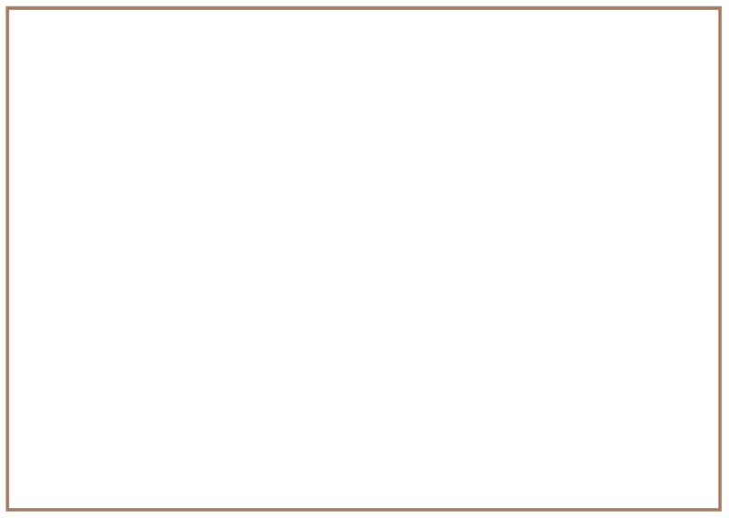

<div class="container">
  <div id="contents" class="col-md-12 main-content"><h1 xmlns="http://www.w3.org/1999/xhtml" id="toc-id-0">Roofs and pylons</h1>

<span xmlns="http://www.w3.org/1999/xhtml" class="char-style-override-1">frame
structures</span>.<figcaption xmlns="http://www.w3.org/1999/xhtml">Figure 1: Internal view of a root structure</figcaption><figcaption xmlns="http://www.w3.org/1999/xhtml">Figure 2: Different types of electricity pylons</figcaption><figcaption xmlns="http://www.w3.org/1999/xhtml">Figure 3: Different types of roof trusses</figcaption><b xmlns="http://www.w3.org/1999/xhtml">solid objects</b> that consist of
one part only. Other objects, like bottles, pots and water
tanks, are hollow objects that can also be called <b xmlns="http://www.w3.org/1999/xhtml">shells</b>. We also make objects
that consist of different parts that are put together, like
chairs, tables and bridges. These objects are called
<b xmlns="http://www.w3.org/1999/xhtml">frame structures</b> and
it is important to try to make frame structures strong.<figcaption xmlns="http://www.w3.org/1999/xhtml">Figure 4</figcaption><li xmlns="http://www.w3.org/1999/xhtml" class="x--Body-investigation-hanging">Use your hand to
press down on the cardboard roof. What happens?<hr/></li>
<li xmlns="http://www.w3.org/1999/xhtml" class="x--Body-investigation-hanging">Your house's roof
plates may be very strong and will not bend. But what will
happen when a couple of big men sit on the roof to fasten the
roof sheets?<hr/></li>
<figcaption xmlns="http://www.w3.org/1999/xhtml">Figure 5</figcaption><li xmlns="http://www.w3.org/1999/xhtml" value="3">Look
carefully at each of the sketches. Then write a sentence for
each sketch to describe the method to strengthen the roof by
<b>bracing</b> it.

<div class="aside">
<p class="Body-box-no-indent">The word "brace" comes from
the French word "bras", which means "arm". When you brace a
structure, you put in something like an extra arm to make it
stronger.</p>
</div>  

<figure>


<figcaption>Figure 6</figcaption></figure><ol><li>Case A:<hr/></li>
<li>Case B:<hr/></li>
<li>Case C:<hr/></li>
</ol></li>
<b xmlns="http://www.w3.org/1999/xhtml">trusses</b>. Trusses can be made of wood
or steel. The different parts of a truss are called
<b xmlns="http://www.w3.org/1999/xhtml">members</b>. Each truss has a vertical member in the middle. This is called
a <b xmlns="http://www.w3.org/1999/xhtml">king post</b>
<span xmlns="http://www.w3.org/1999/xhtml">.</span>
<figcaption xmlns="http://www.w3.org/1999/xhtml">Figure 7: Incomplete roof trusses</figcaption><li xmlns="http://www.w3.org/1999/xhtml" value="4">
What part of the roof trusses shown here will prevent them
from tearing apart when the roof sheets are loaded onto them?
Mark this part on one of the roof trusses on Figure 8.</li>

<figcaption xmlns="http://www.w3.org/1999/xhtml">Figure 8</figcaption><b xmlns="http://www.w3.org/1999/xhtml">tie beam.</b>

<figcaption xmlns="http://www.w3.org/1999/xhtml">Figure 9: The yellow tie beam is under tension.</figcaption><b xmlns="http://www.w3.org/1999/xhtml">tension</b> in the tie
beam, just like there is tension in a rope you pull.<b xmlns="http://www.w3.org/1999/xhtml">tensile
forces</b>.<b xmlns="http://www.w3.org/1999/xhtml">rafters</b>.<li xmlns="http://www.w3.org/1999/xhtml" class="x--Body-investigation-hanging--1-3-">Write the
name of each of the four members next to the member on the
diagram in Figure 10. This is called adding <b>labels</b> to the diagram.</li>
<figcaption xmlns="http://www.w3.org/1999/xhtml">Figure 10</figcaption><figcaption xmlns="http://www.w3.org/1999/xhtml">Figure 11</figcaption><li xmlns="http://www.w3.org/1999/xhtml" value="2" class="x--Body-investigation-hanging--1-3- para-style-override-11">What can you do to strengthen the trusses so that the rafters will not bend when a heavy load is acting on them? Make a
sketch here to show your plan.   
<div class="frame-21">
</div>
</li>


<b xmlns="http://www.w3.org/1999/xhtml">struts</b> to
support the rafters.<figcaption xmlns="http://www.w3.org/1999/xhtml">Figure 12</figcaption><b xmlns="http://www.w3.org/1999/xhtml">compressive
force</b>.<figcaption xmlns="http://www.w3.org/1999/xhtml">Figure 13: Compressive forces acting on beams</figcaption><p xmlns="http://www.w3.org/1999/xhtml">A force that is able to stretch or pull something
apart is called a <b>tensile force.</b>
A force that is able to compress or squash
something is called a <b>compressive force.</b>
</p>
<li xmlns="http://www.w3.org/1999/xhtml" class="x--Body-investigation-hanging--1-3- para-style-override-15">Roll a sheet of paper into a tube and twist it like the person in the photograph is twisting the towel. By doing this you apply a <b>torsion</b> force on the paper tube.  <figure><figcaption>Figure 14</figcaption></figure></li>


<li xmlns="http://www.w3.org/1999/xhtml" class="x--Body-investigation-hanging--1-3- para-style-override-15">Press your two hands together tightly as shown in this
photograph. Then rub them against each other.

<figure><figcaption>Figure 15</figcaption></figure><p class="x--Body--above">If you put a piece of clay between
your hands while you do this, the shape of the clay will
change. The force applied by your rubbing hands is called
<b>shear force.</b>
</p>
</li>
<figcaption xmlns="http://www.w3.org/1999/xhtml">Figure 16</figcaption><figcaption xmlns="http://www.w3.org/1999/xhtml">Figure 17</figcaption><li xmlns="http://www.w3.org/1999/xhtml" class="x--Body-investigation-hanging para-style-override-18">In
each case, say which kind of force is demonstrated in the
picture.<figure><figcaption>Figure 17</figcaption></figure></li>
<li xmlns="http://www.w3.org/1999/xhtml" class="x--Body-investigation-hanging">Will this roof
structure work well?

<figure><figcaption>Figure 19</figcaption></figure><p class="x--Body-investigation-hanging">Describe what could go
wrong when roof plates or tiles are put on this roof
structure.</p>
<hr/><p class="x--Body-Text">Trusses like the ones in the drawings
below are called <b>queen-post</b>
trusses. The two vertical members are called queen-posts. They
are shaded in Figure 20.</p>

<figure><figcaption>Figure 20</figcaption></figure></li>
<li xmlns="http://www.w3.org/1999/xhtml" class="x--Body-investigation-hanging">Figure 21 is a
drawing of another type of queen-post truss. Shade the
queen-posts on the drawing.   
<figure><figcaption>Figure 21</figcaption></figure></li>
<li xmlns="http://www.w3.org/1999/xhtml" class="x--Body-investigation-hanging">On Figure 22, label
members under compression with a "C" and members under tension
with a "T". Do this for all the members except for the
rafters.
<figure><figcaption>Figure 22</figcaption></figure></li>
<li xmlns="http://www.w3.org/1999/xhtml" class="x--Body-investigation-hanging">Look at the
pictures below and on the next two pages. What purposes do
these structures serve? Why do we build them?<hr/><figure><figcaption>Figure 23</figcaption></figure></li>
<li xmlns="http://www.w3.org/1999/xhtml" class="x--Body-investigation-hanging--1-3- para-style-override-23">Why do you think the pylon in Figure 24 is designed the way it
is, and not in the way shown in Figure 25?<hr/></li>
<figcaption xmlns="http://www.w3.org/1999/xhtml">Figure 24</figcaption><figcaption xmlns="http://www.w3.org/1999/xhtml">Figure 25</figcaption><figcaption xmlns="http://www.w3.org/1999/xhtml">Figure 26</figcaption><figcaption xmlns="http://www.w3.org/1999/xhtml">Figure 27</figcaption><figcaption xmlns="http://www.w3.org/1999/xhtml">Figure 28</figcaption><figcaption xmlns="http://www.w3.org/1999/xhtml">Figure 29</figcaption><p xmlns="http://www.w3.org/1999/xhtml" class="x--Body-box-no-indent">The pylons in Figures 26 and
28 are solid structures made from concrete. All the other
pylons are steel frame structures.</p>
<li xmlns="http://www.w3.org/1999/xhtml" value="3">What do you think
is indicated by the green parts of these drawings?<hr/></li>
<figcaption xmlns="http://www.w3.org/1999/xhtml">Figure 30: Skewing of a rectangular frame</figcaption><p xmlns="http://www.w3.org/1999/xhtml" class="x--Body-box-no-indent">You can also use the word
skew as a verb:</p>

<p xmlns="http://www.w3.org/1999/xhtml" class="x--Body-box">You can say the "forces <b>skew</b> the frame".</p>

<p xmlns="http://www.w3.org/1999/xhtml" class="x--Body-box">Or you can say that the "forces
<b>are skewing</b> the frame".</p>
<li xmlns="http://www.w3.org/1999/xhtml" class="x--Body-investigation-hanging">What happens to the
lengths of the lines AC and BD when the frame skews? Go measure
it and find out!
<hr/></li>
<b xmlns="http://www.w3.org/1999/xhtml">triangulate</b> it:<p xmlns="http://www.w3.org/1999/xhtml" class="x--Body-box-no-indent">A support inserted to
triangulate a frame can also be called a <b>brace</b>.</p>
<figcaption xmlns="http://www.w3.org/1999/xhtml">Figure 31: Simple triangulation of a frame</figcaption><li xmlns="http://www.w3.org/1999/xhtml" value="2">Compare what
happens when you apply forces as in case A and case B.
<ol><li class="x--Body-investigation-hanging-a-">Why does the
frame keep its shape in case A but changes shape in case B?<br/>
Hint: Think about the type of forces acting on the blue
beam.<hr/></li>
<li class="x--Body-investigation-hanging-a-"> How can
you improve the design of the frame
so that forces cannot make it skew?<hr/></li>
</ol></li>
<figcaption xmlns="http://www.w3.org/1999/xhtml">Figure 32: Cross-bracing a frame</figcaption><b xmlns="http://www.w3.org/1999/xhtml">cross-bracing</b>. It is a special
kind of triangulation. With cross-bracing, the frame does not
skew when forces are applied as in case A or case B.<li xmlns="http://www.w3.org/1999/xhtml" value="3" class="x--Body-investigation-hanging">Compare the frame
design in Figure 31 with the one in Figure 32.
<ol><li class="x--Body-investigation-hanging-a-">Can you use
steel cables instead of beams for the braces in both of these
frame designs? Explain your answer.<hr/></li>
<li class="x--Body-investigation-hanging-a-">If you use
steel beams as braces for both frame designs, do you have to
use the same thickness beams in both designs? Or can you save
material and use thinner braces in one of the designs?<hr/></li>
</ol></li>

<figcaption xmlns="http://www.w3.org/1999/xhtml">Figure 33: Skewing</figcaption><figcaption xmlns="http://www.w3.org/1999/xhtml">Figure 34: Twisting</figcaption><i xmlns="http://www.w3.org/1999/xhtml">inside</i>
the frame structure. The photos below show how a frame
structure can be built with cross-bracing on the inside and on
the outside. The cross-bracing on the inside is in red, and the
cross-bracing on the outside is in dark blue.<figcaption xmlns="http://www.w3.org/1999/xhtml">Figure 35: Internal cross-bracing</figcaption>
  </div>
</div>